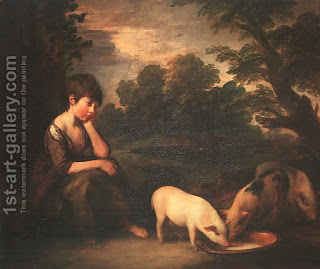

Pesachim 3 - Trying to use clean language
We have explained the use of the word "light" to mean "night," in the opening rule of Passover as the teacher’s attempt to use clean language - since night has connotation of darkness - with its possible spiritual implications. From where does the Talmud derive this idea?
In describing which animals went into Noah’s Ark, the Torah says, "and of animals that are not pure…" It could have said, "that are impure," but it wanted to avoid calling them thus, and spent extra eight letters to use a lengthy but pure language.
However, in teaching one must also express himself in the most concise and clear language possible, so that that it would be easier for students to remember. What is the conclusion then? As such: if the two ways, the clean and not clean, are equal in length, one should use the clean language. But if the clean language is longer, one should use the precise though unpleasant language. And to teach us exactly this lesson the Torah deviated from the rule and said "animals that are not pure."
Once there were two students studying with Rav. One said, "this study made us tired as pigs," and the other - "this study made us tired as young goats," and Rav never spoke with the first one again.
Art: Girl with Pigs By Thomas Gainsborough 1727-1788